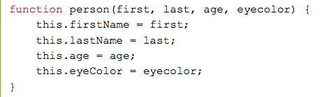
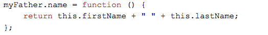
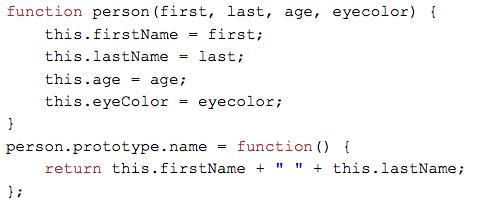

Basic syntax
At a high level, a prototype is a structure guideline that will be followed when you want to create objects of that type. properties and Functions can be added after the prototype is completed, so a prototype should outline the functions and properties that you want all of the objects to contain. A good hypothetical example is a person.  Breaking this down, this is a very simple example of what a prototype looks like. You have the object, which is function person, and the properties and order they are passed in. This code at this point does not create a person though, it's just the framework to create a person. To create a person, we would type something like the following That's nice, now we have two person objects. To add a property we need to use the syntax object.propertyName = "content". For our object myFather it would look like Now that we can add a property, what if we want to add a function to an existing object?  The syntax is very similar, so that makes it very nice to work with. Now what if we want to update the prototype? So far it has just been the existing objects. That looks more like this: 
Inheritance
Inheritance is a topic worth discussing with regard to prototypes. An object will inherit all properties from the prototype when it is created. From there it can be modified as you see fit. This is why it is important to have identify what properties are needed in the prototype. In the context of a game, you may have individual units on a map, that all have a few characteristics in common. One, they exist on the map, and two, they have a content such as health. that could be the extent of their similarities for all units on the map. Of course you can then create further prototypes that inherit these properties, and then create a new set of properties per prototype type.